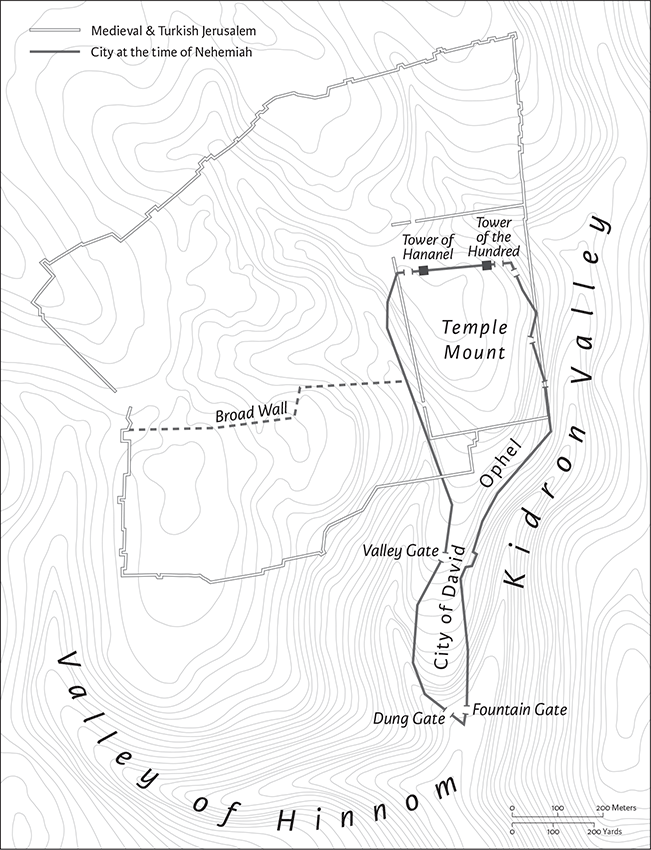

Nehemiah
2 Esdras in Greek
The book of Nehemiah was originally the second section of a single book (Ezra‐Nehemiah, preserved as Esdras b in the ancient Greek versions of the Bible); see further the Introduction to Ezra (pp. 675–76).
The Nehemiah section of Ezra‐Nehemiah depicts the final stage of Jewish reconstruction after exile, featuring Nehemiah, the Jewish governor under Persian rule, who rebuilds Jerusalem’s walls (1.1–7.5) and oversees many reforms. Large portions of this book are called the Nehemiah Memoir, a first‐person account of his activities. The book’s structure continues the narrative that began with Ezra 1. Nehemiah 1 begins with Stage Three of the return from exile, when Nehemiah rebuilds Jerusalem’s walls (Neh 1.1–7.5). This is followed by the repetition of the list of returnees (7.6–73; see Ezra 2) that frames the three stages of return and reconstruction. The book concludes with the grand celebration of the reconstruction by the rededicated community, now organized according to the Torah, “the law of Moses/“the law of God” (chs 8–13), with rebuilt Jerusalem as a holy city.
Nehemiah is presented as a dynamic, enterprising man who achieves his goal of rebuilding despite repeated interference from other leaders such as the governor of Samaria (see 2.9–10). Although he does not appear elsewhere in the Hebrew Bible, Nehemiah is celebrated in 2 Macc 1.19–36 and Sirach 49.13.
Tamara Cohn Eskenazi
1 The words of Nehemiah son of Hacaliah. In the month of Chislev, in the twentieth year, while I was in Susa the capital, 2one of my brothers, Hanani, came with certain men from Judah; and I asked them about the Jews that survived, those who had escaped the captivity, and about Jerusalem. 3They replied, “The survivors there in the province who escaped captivity are in great trouble and shame; the wall of Jerusalem is broken down, and its gates have been destroyed by fire.”
4When I heard these words I sat down and wept, and mourned for days, fasting and praying before the God of heaven. 5I said, “O Lord God of heaven, the great and awesome God who keeps covenant and steadfast love with those who love him and keep his commandments; 6let your ear be attentive and your eyes open to hear the prayer of your servant that I now pray before you day and night for your servants, the people of Israel, confessing the sins of the people of Israel, which we have sinned against you. Both I and my family have sinned. 7We have offended you deeply, failing to keep the commandments, the statutes, and the ordinances that you commanded your servant Moses. 8Remember the word that you commanded your servant Moses, ‘If you are unfaithful, I will scatter you among the peoples; 9but if you return to me and keep my commandments and do them, though your outcasts are under the farthest skies, I will gather them from there and bring them to the place at which I have chosen to establish my name.’ 10They are your servants and your people, whom you redeemed by your great power and your strong hand. 11O Lord, let your ear be attentive to the prayer of your servant, and to the prayer of your servants who delight in revering your name. Give success to your servant today, and grant him mercy in the sight of this man!”

Jerusalem in the time of Nehemiah
2 At the time, I was cupbearer to the king. In the month of Nisan, in the twentieth year of King Artaxerxes, when wine was served him, I carried the wine and gave it to the king. Now, I had never been sad in his presence before. 2So the king said to me, “Why is your face sad, since you are not sick? This can only be sadness of the heart.” Then I was very much afraid. 3I said to the king, “May the king live forever! Why should my face not be sad, when the city, the place of my ancestors’ graves, lies waste, and its gates have been destroyed by fire?” 4Then the king said to me, “What do you request?” So I prayed to the God of heaven. 5Then I said to the king, “If it pleases the king, and if your servant has found favor with you, I ask that you send me to Judah, to the city of my ancestors’ graves, so that I may rebuild it.” 6The king said to me (the queen also was sitting beside him), “How long will you be gone, and when will you return?” So it pleased the king to send me, and I set him a date. 7Then I said to the king, “If it pleases the king, let letters be given me to the governors of the province Beyond the River, that they may grant me passage until I arrive in Judah; 8and a letter to Asaph, the keeper of the king’s forest, directing him to give me timber to make beams for the gates of the temple fortress, and for the wall of the city, and for the house that I shall occupy.” And the king granted me what I asked, for the gracious hand of my God was upon me.
9Then I came to the governors of the province Beyond the River, and gave them the king’s letters. Now the king had sent officers of the army and cavalry with me. 10When Sanballat the Horonite and Tobiah the Ammonite official heard this, it displeased them greatly that someone had come to seek the welfare of the people of Israel.
11So I came to Jerusalem and was there for three days. 12Then I got up during the night, I and a few men with me; I told no one what my God had put into my heart to do for Jerusalem. The only animal I took was the animal I rode. 13I went out by night by the Valley Gate past the Dragon’s Spring and to the Dung Gate, and I inspected the walls of Jerusalem that had been broken down and its gates that had been destroyed by fire. 14Then I went on to the Fountain Gate and to the King’s Pool; but there was no place for the animal I was riding to continue. 15So I went up by way of the valley by night and inspected the wall. Then I turned back and entered by the Valley Gate, and so returned. 16The officials did not know where I had gone or what I was doing; I had not yet told the Jews, the priests, the nobles, the officials, and the rest that were to do the work.
17Then I said to them, “You see the trouble we are in, how Jerusalem lies in ruins with its gates burned. Come, let us rebuild the wall of Jerusalem, so that we may no longer suffer disgrace.” 18I told them that the hand of my God had been gracious upon me, and also the words that the king had spoken to me. Then they said, “Let us start building!” So they committed themselves to the common good. 19But when Sanballat the Horonite and Tobiah the Ammonite official, and Geshem the Arab heard of it, they mocked and ridiculed us, saying, “What is this that you are doing? Are you rebelling against the king?” 20Then I replied to them, “The God of heaven is the one who will give us success, and we his servants are going to start building; but you have no share or claim or historic right in Jerusalem.”
3 Then the high priest Eliashib set to work with his fellow priests and rebuilt the Sheep Gate. They consecrated it and set up its doors; they consecrated it as far as the Tower of the Hundred and as far as the Tower of Hananel. 2And the men of Jericho built next to him. And next to thema Zaccur son of Imri built.
3The sons of Hassenaah built the Fish Gate; they laid its beams and set up its doors, its bolts, and its bars. 4Next to them Meremoth son of Uriah son of Hakkoz made repairs. Next to them Meshullam son of Berechiah son of Meshezabel made repairs. Next to them Zadok son of Baana made repairs. 5Next to them the Tekoites made repairs; but their nobles would not put their shoulders to the work of their Lord.a
6Joiada son of Paseah and Meshullam son of Besodeiah repaired the Old Gate; they laid its beams and set up its doors, its bolts, and its bars. 7Next to them repairs were made by Melatiah the Gibeonite and Jadon the Meronothite—the men of Gibeon and of Mizpah—who were under the jurisdiction of b the governor of the province Beyond the River. 8Next to them Uzziel son of Harhaiah, one of the goldsmiths, made repairs. Next to him Hananiah, one of the perfumers, made repairs; and they restored Jerusalem as far as the Broad Wall. 9Next to them Rephaiah son of Hur, ruler of half the district ofc Jerusalem, made repairs. 10Next to them Jedaiah son of Harumaph made repairs opposite his house; and next to him Hattush son of Hashabneiah made repairs. 11Malchijah son of Harim and Hasshub son of Pahath‐moab repaired another section and the Tower of the Ovens. 12Next to him Shallum son of Hallohesh, ruler of half the district ofc Jerusalem, made repairs, he and his daughters.
13Hanun and the inhabitants of Zanoah repaired the Valley Gate; they rebuilt it and set up its doors, its bolts, and its bars, and repaired a thousand cubits of the wall, as far as the Dung Gate.
14Malchijah son of Rechab, ruler of the district of d Beth‐haccherem, repaired the Dung Gate; he rebuilt it and set up its doors, its bolts, and its bars.
15And Shallum son of Col‐hozeh, ruler of the district ofd Mizpah, repaired the Fountain Gate; he rebuilt it and covered it and set up its doors, its bolts, and its bars; and he built the wall of the Pool of Shelah of the king’s garden, as far as the stairs that go down from the City of David. 16After him Nehemiah son of Azbuk, ruler of half the district ofc Bethzur, repaired from a point opposite the graves of David, as far as the artificial pool and the house of the warriors. 17After him the Levites made repairs: Rehum son of Bani; next to him Hashabiah, ruler of half the district ofc Keilah, made repairs for his district. 18After him their kin made repairs: Binnui,e son of Henadad, ruler of half the district ofc Keilah; 19next to him Ezer son of Jeshua, rulerf of Mizpah, repaired another section opposite the ascent to the armory at the Angle. 20After him Baruch son of Zabbai repaired another section from the Angle to the door of the house of the high priest Eliashib. 21After him Meremoth son of Uriah son of Hakkoz repaired another section from the door of the house of Eliashib to the end of the house of Eliashib. 22After him the priests, the men of the surrounding area, made repairs. 23After them Benjamin and Hasshub made repairs opposite their house. After them Azariah son of Maaseiah son of Ananiah made repairs beside his own house. 24After him Binnui son of Henadad repaired another section, from the house of Azariah to the Angle and to the corner. 25Palal son of Uzai repaired opposite the Angle and the tower projecting from the upper house of the king at the court of the guard. After him Pedaiah son of Parosh 26and the temple servants livinga on Ophel made repairs up to a point opposite the Water Gate on the east and the projecting tower. 27After him the Tekoites repaired another section opposite the great projecting tower as far as the wall of Ophel.
28Above the Horse Gate the priests made repairs, each one opposite his own house. 29After them Zadok son of Immer made repairs opposite his own house. After him Shemaiah son of Shecaniah, the keeper of the East Gate, made repairs. 30After him Hananiah son of Shelemiah and Hanun sixth son of Zalaph repaired another section. After him Meshullam son of Berechiah made repairs opposite his living quarters. 31After him Malchijah, one of the goldsmiths, made repairs as far as the house of the temple servants and of the merchants, opposite the Muster Gate,b and to the upper room of the corner. 32And between the upper room of the corner and the Sheep Gate the goldsmiths and the merchants made repairs.
4c Now when Sanballat heard that we were building the wall, he was angry and greatly enraged, and he mocked the Jews. 2He said in the presence of his associates and of the army of Samaria, “What are these feeble Jews doing? Will they restore things? Will they sacrifice? Will they finish it in a day? Will they revive the stones out of the heaps of rubbish—and burned ones at that?” 3Tobiah the Ammonite was beside him, and he said, “That stone wall they are building—any fox going up on it would break it down!” 4Hear, O our God, for we are despised; turn their taunt back on their own heads, and give them over as plunder in a land of captivity. 5Do not cover their guilt, and do not let their sin be blotted out from your sight; for they have hurled insults in the face of the builders.
6So we rebuilt the wall, and all the wall was joined together to half its height; for the people had a mind to work.
7dBut when Sanballat and Tobiah and the Arabs and the Ammonites and the Ashdodites heard that the repairing of the walls of Jerusalem was going forward and the gaps were beginning to be closed, they were very angry, 8and all plotted together to come and fight against Jerusalem and to cause confusion in it. 9So we prayed to our God, and set a guard as a protection against them day and night.
10But Judah said, “The strength of the burden bearers is failing, and there is too much rubbish so that we are unable to work on the wall.” 11And our enemies said, “They will not know or see anything before we come upon them and kill them and stop the work.” 12When the Jews who lived near them came, they said to us ten times, “From all the places where they livee they will come up against us.”f 13So in the lowest parts of the space behind the wall, in open places, I stationed the people according to their families,a with their swords, their spears, and their bows. 14After I looked these things over, I stood up and said to the nobles and the officials and the rest of the people, “Do not be afraid of them. Remember the Lord, who is great and awesome, and fight for your kin, your sons, your daughters, your wives, and your homes.”
15When our enemies heard that their plot was known to us, and that God had frustrated it, we all returned to the wall, each to his work. 16From that day on, half of my servants worked on construction, and half held the spears, shields, bows, and body‐armor; and the leaders posted themselves behind the whole house of Judah, 17who were building the wall. The burden bearers carried their loads in such a way that each labored on the work with one hand and with the other held a weapon. 18And each of the builders had his sword strapped at his side while he built. The man who sounded the trumpet was beside me. 19And I said to the nobles, the officials, and the rest of the people, “The work is great and widely spread out, and we are separated far from one another on the wall. 20Rally to us wherever you hear the sound of the trumpet. Our God will fight for us.”
21So we labored at the work, and half of them held the spears from break of dawn until the stars came out. 22I also said to the people at that time, “Let every man and his servant pass the night inside Jerusalem, so that they may be a guard for us by night and may labor by day.” 23So neither I nor my brothers nor my servants nor the men of the guard who followed me ever took off our clothes; each kept his weapon in his right hand.b
5 Now there was a great outcry of the people and of their wives against their Jewish kin. 2For there were those who said, “With our sons and our daughters, we are many; we must get grain, so that we may eat and stay alive.” 3There were also those who said, “We are having to pledge our fields, our vineyards, and our houses in order to get grain during the famine.” 4And there were those who said, “We are having to borrow money on our fields and vineyards to pay the king’s tax. 5Now our flesh is the same as that of our kindred; our children are the same as their children; and yet we are forcing our sons and daughters to be slaves, and some of our daughters have been ravished; we are powerless, and our fields and vineyards now belong to others.”
6I was very angry when I heard their outcry and these complaints. 7After thinking it over, I brought charges against the nobles and the officials; I said to them, “You are all taking interest from your own people.” And I called a great assembly to deal with them, 8and said to them, “As far as we were able, we have bought back our Jewish kindred who had been sold to other nations; but now you are selling your own kin, who must then be bought back by us!” They were silent, and could not find a word to say. 9So I said, “The thing that you are doing is not good. Should you not walk in the fear of our God, to prevent the taunts of the nations our enemies? 10Moreover I and my brothers and my servants are lending them money and grain. Let us stop this taking of interest. 11Restore to them, this very day, their fields, their vineyards, their olive orchards, and their houses, and the interest on money, grain, wine, and oil that you have been exacting from them.” 12Then they said, “We will restore everything and demand nothing more from them. We will do as you say.” And I called the priests, and made them take an oath to do as they had promised. 13I also shook out the fold of my garment and said, “So may God shake out everyone from house and from property who does not perform this promise. Thus may they be shaken out and emptied.” And all the assembly said, “Amen,” and praised the Lord. And the people did as they had promised.
14Moreover from the time that I was appointed to be their governor in the land of Judah, from the twentieth year to the thirty‐second year of King Artaxerxes, twelve years, neither I nor my brothers ate the food allowance of the governor. 15The former governors who were before me laid heavy burdens on the people, and took food and wine from them, besides forty shekels of silver. Even their servants lorded it over the people. But I did not do so, because of the fear of God. 16Indeed, I devoted myself to the work on this wall, and acquired no land; and all my servants were gathered there for the work. 17Moreover there were at my table one hundred fifty people, Jews and officials, besides those who came to us from the nations around us. 18Now that which was prepared for one day was one ox and six choice sheep; also fowls were prepared for me, and every ten days skins of wine in abundance; yet with all this I did not demand the food allowance of the governor, because of the heavy burden of labor on the people. 19Remember for my good, O my God, all that I have done for this people.
6 Now when it was reported to Sanballat and Tobiah and to Geshem the Arab and to the rest of our enemies that I had built the wall and that there was no gap left in it (though up to that time I had not set up the doors in the gates), 2Sanballat and Geshem sent to me, saying, “Come and let us meet together in one of the villages in the plain of Ono.” But they intended to do me harm. 3So I sent messengers to them, saying, “I am doing a great work and I cannot come down. Why should the work stop while I leave it to come down to you?” 4They sent to me four times in this way, and I answered them in the same manner. 5In the same way Sanballat for the fifth time sent his servant to me with an open letter in his hand. 6In it was written, “It is reported among the nations—and Geshema also says it—that you and the Jews intend to rebel; that is why you are building the wall; and according to this report you wish to become their king. 7You have also set up prophets to proclaim in Jerusalem concerning you, ‘There is a king in Judah!’ And now it will be reported to the king according to these words. So come, therefore, and let us confer together.” 8Then I sent to him, saying, “No such things as you say have been done; you are inventing them out of your own mind” 9—for they all wanted to frighten us, thinking, “Their hands will drop from the work, and it will not be done.” But now, O God, strengthen my hands.
10One day when I went into the house of Shemaiah son of Delaiah son of Mehetabel, who was confined to his house, he said, “Let us meet together in the house of God, within the temple, and let us close the doors of the temple, for they are coming to kill you; indeed, tonight they are coming to kill you.” 11But I said, “Should a man like me run away? Would a man like me go into the temple to save his life? I will not go in!” 12Then I perceived and saw that God had not sent him at all, but he had pronounced the prophecy against me because Tobiah and Sanballat had hired him. 13He was hired for this purpose, to intimidate me and make me sin by acting in this way, and so they could give me a bad name, in order to taunt me. 14Remember Tobiah and Sanballat, O my God, according to these things that they did, and also the prophetess Noadiah and the rest of the prophets who wanted to make me afraid.
15So the wall was finished on the twentyfifth day of the month Elul, in fifty‐two days. 16And when all our enemies heard of it, all the nations around us were afraidb and fell greatly in their own esteem; for they perceived that this work had been accomplished with the help of our God. 17Moreover in those days the nobles of Judah sent many letters to Tobiah, and Tobiah’s letters came to them. 18For many in Judah were bound by oath to him, because he was the son‐in‐law of Shecaniah son of Arah: and his son Jehohanan had married the daughter of Meshullam son of Berechiah. 19Also they spoke of his good deeds in my presence, and reported my words to him. And Tobiah sent letters to intimidate me.
7 Now when the wall had been built and I had set up the doors, and the gatekeepers, the singers, and the Levites had been appointed, 2I gave my brother Hanani charge over Jerusalem, along with Hananiah the commander of the citadel—for he was a faithful man and feared God more than many. 3And I said to them, “The gates of Jerusalem are not to be opened until the sun is hot; while the gatekeepersa are still standing guard, let them shut and bar the doors. Appoint guards from among the inhabitants of Jerusalem, some at their watch posts, and others before their own houses.” 4The city was wide and large, but the people within it were few and no houses had been built.
5Then my God put it into my mind to assemble the nobles and the officials and the people to be enrolled by genealogy. And I found the book of the genealogy of those who were the first to come back, and I found the following written in it:
6These are the people of the province who came up out of the captivity of those exiles whom King Nebuchadnezzar of Babylon had carried into exile; they returned to Jerusalem and Judah, each to his town. 7They came with Zerubbabel, Jeshua, Nehemiah, Azariah, Raamiah, Nahamani, Mordecai, Bilshan, Mispereth, Bigvai, Nehum, Baanah.
The number of the Israelite people: 8the descendants of Parosh, two thousand one hundred seventy‐two. 9Of Shephatiah, three hundred seventy‐two. 10Of Arah, six hundred fifty‐two. 11Of Pahath‐moab, namely the descendants of Jeshua and Joab, two thousand eight hundred eighteen. 12Of Elam, one thousand two hundred fifty‐four. 13Of Zattu, eight hundred forty‐five. 14Of Zaccai, seven hundred sixty. 15Of Binnui, six hundred forty‐eight. 16Of Bebai, six hundred twenty‐eight. 17Of Azgad, two thousand three hundred twenty‐two. 18Of Adonikam, six hundred sixty‐seven. 19Of Bigvai, two thousand sixty‐seven. 20Of Adin, six hundred fifty‐five. 21Of Ater, namely of Hezekiah, ninety‐eight. 22Of Hashum, three hundred twenty‐eight. 23Of Bezai, three hundred twenty‐four. 24Of Hariph, one hundred twelve. 25Of Gibeon, ninety‐five. 26The people of Bethlehem and Netophah, one hundred eighty‐eight. 27Of Anathoth, one hundred twenty‐eight. 28Of Beth‐azmaveth, forty‐two. 29Of Kiriath‐jearim, Chephirah, and Beeroth, seven hundred forty‐three. 30Of Ramah and Geba, six hundred twenty‐one. 31Of Michmas, one hundred twenty‐two. 32Of Bethel and Ai, one hundred twenty‐three. 33Of the other Nebo, fifty‐two. 34The descendants of the other Elam, one thousand two hundred fiftyfour. 35Of Harim, three hundred twenty. 36Of Jericho, three hundred forty‐five. 37Of Lod, Hadid, and Ono, seven hundred twenty‐one. 38Of Senaah, three thousand nine hundred thirty.
39The priests: the descendants of Jedaiah, namely the house of Jeshua, nine hundred seventy‐three. 40Of Immer, one thousand fifty‐two. 41Of Pashhur, one thousand two hundred forty‐seven. 42Of Harim, one thousand seventeen.
43The Levites: the descendants of Jeshua, namely of Kadmiel of the descendants of Hodevah, seventy‐four. 44The singers: the descendants of Asaph, one hundred forty‐eight. 45The gatekeepers: the descendants of Shallum, of Ater, of Talmon, of Akkub, of Hatita, of Shobai, one hundred thirty‐eight.
46The temple servants: the descendants of Ziha, of Hasupha, of Tabbaoth, 47of Keros, of Sia, of Padon, 48of Lebana, of Hagaba, of Shalmai, 49of Hanan, of Giddel, of Gahar, 50of Reaiah, of Rezin, of Nekoda, 51of Gazzam, of Uzza, of Paseah, 52of Besai, of Meunim, of Nephushesim, 53of Bakbuk, of Hakupha, of Harhur, 54of Bazlith, of Mehida, of Harsha, 55of Barkos, of Sisera, of Temah, 56of Neziah, of Hatipha.
57The descendants of Solomon’s servants: of Sotai, of Sophereth, of Perida, 58of Jaala, of Darkon, of Giddel, 59of Shephatiah, of Hattil, of Pochereth‐hazzebaim, of Amon.
60All the temple servants and the descendants of Solomon’s servants were three hundred ninety‐two.
61The following were those who came up from Tel‐melah, Tel‐harsha, Cherub, Addon, and Immer, but they could not prove their ancestral houses or their descent, whether they belonged to Israel: 62the descendants of Delaiah, of Tobiah, of Nekoda, six hundred forty‐two. 63Also, of the priests: the descendants of Hobaiah, of Hakkoz, of Barzillai (who had married one of the daughters of Barzillai the Gileadite and was called by their name). 64These sought their registration among those enrolled in the genealogies, but it was not found there, so they were excluded from the priesthood as unclean; 65the governor told them that they were not to partake of the most holy food, until a priest with Urim and Thummim should come.
66The whole assembly together was fortytwo thousand three hundred sixty, 67besides their male and female slaves, of whom there were seven thousand three hundred thirtyseven; and they had two hundred forty‐five singers, male and female. 68They had seven hundred thirty‐six horses, two hundred forty‐five mules,a 69four hundred thirty‐five camels, and six thousand seven hundred twenty donkeys.
70Now some of the heads of ancestral houses contributed to the work. The governor gave to the treasury one thousand darics of gold, fifty basins, and five hundred thirty priestly robes. 71And some of the heads of ancestral houses gave into the building fund twenty thousand darics of gold and two thousand two hundred minas of silver. 72And what the rest of the people gave was twenty thousand darics of gold, two thousand minas of silver, and sixty‐seven priestly robes.
73So the priests, the Levites, the gatekeepers, the singers, some of the people, the temple servants, and all Israel settled in their towns. When the seventh month came—the people of Israel being settled in their towns—
8 all the people gathered together into the square before the Water Gate. They told the scribe Ezra to bring the book of the law of Moses, which the Lord had given to Israel. 2Accordingly, the priest Ezra brought the law before the assembly, both men and women and all who could hear with understanding. This was on the first day of the seventh month. 3He read from it facing the square before the Water Gate from early morning until midday, in the presence of the men and the women and those who could understand; and the ears of all the people were attentive to the book of the law. 4The scribe Ezra stood on a wooden platform that had been made for the purpose; and beside him stood Mattithiah, Shema, Anaiah, Uriah, Hilkiah, and Maaseiah on his right hand; and Pedaiah, Mishael, Malchijah, Hashum, Hash‐baddanah, Zechariah, and Meshullam on his left hand. 5And Ezra opened the book in the sight of all the people, for he was standing above all the people; and when he opened it, all the people stood up. 6Then Ezra blessed the Lord, the great God, and all the people answered, “Amen, Amen,” lifting up their hands. Then they bowed their heads and worshiped the Lord with their faces to the ground. 7Also Jeshua, Bani, Sherebiah, Jamin, Akkub, Shabbethai, Hodiah, Maaseiah, Kelita, Azariah, Jozabad, Hanan, Pelaiah, the Levites,a helped the people to understand the law, while the people remained in their places. 8So they read from the book, from the law of God, with interpretation. They gave the sense, so that the people understood the reading.
9And Nehemiah, who was the governor, and Ezra the priest and scribe, and the Levites who taught the people said to all the people, “This day is holy to the Lord your God; do not mourn or weep.” For all the people wept when they heard the words of the law. 10Then he said to them, “Go your way, eat the fat and drink sweet wine and send portions of them to those for whom nothing is prepared, for this day is holy to our Lord; and do not be grieved, for the joy of the Lord is your strength.” 11So the Levites stilled all the people, saying, “Be quiet, for this day is holy; do not be grieved.” 12And all the people went their way to eat and drink and to send portions and to make great rejoicing, because they had understood the words that were declared to them.
13On the second day the heads of ancestral houses of all the people, with the priests and the Levites, came together to the scribe Ezra in order to study the words of the law. 14And they found it written in the law, which the Lord had commanded by Moses, that the people of Israel should live in boothsb during the festival of the seventh month, 15and that they should publish and proclaim in all their towns and in Jerusalem as follows, “Go out to the hills and bring branches of olive, wild olive, myrtle, palm, and other leafy trees to make booths,a as it is written.” 16So the people went out and brought them, and made boothsa for themselves, each on the roofs of their houses, and in their courts and in the courts of the house of God, and in the square at the Water Gate and in the square at the Gate of Ephraim. 17And all the assembly of those who had returned from the captivity made boothsa and lived in them; for from the days of Jeshua son of Nun to that day the people of Israel had not done so. And there was very great rejoicing. 18And day by day, from the first day to the last day, he read from the book of the law of God. They kept the festival seven days; and on the eighth day there was a solemn assembly, according to the ordinance.
9 Now on the twenty‐fourth day of this month the people of Israel were assembled with fasting and in sackcloth, and with earth on their heads.b 2Then those of Israelite descent separated themselves from all foreigners, and stood and confessed their sins and the iniquities of their ancestors. 3They stood up in their place and read from the book of the law of the Lord their God for a fourth part of the day, and for another fourth they made confession and worshiped the Lord their God. 4Then Jeshua, Bani, Kadmiel, Shebaniah, Bunni, Sherebiah, Bani, and Chenani stood on the stairs of the Levites and cried out with a loud voice to the Lord their God. 5Then the Levites, Jeshua, Kadmiel, Bani, Hashabneiah, Sherebiah, Hodiah, Shebaniah, and Pethahiah, said, “Stand up and bless the Lord your God from everlasting to everlasting. Blessed be your glorious name, which is exalted above all blessing and praise.”
6And Ezra said:c “You are the Lord, you alone; you have made heaven, the heaven of heavens, with all their host, the earth and all that is on it, the seas and all that is in them. To all of them you give life, and the host of heaven worships you. 7You are the Lord, the God who chose Abram and brought him out of Ur of the Chaldeans and gave him the name Abraham; 8and you found his heart faithful before you, and made with him a covenant to give to his descendants the land of the Canaanite, the Hittite, the Amorite, the Perizzite, the Jebusite, and the Girgashite; and you have fulfilled your promise, for you are righteous.
9“And you saw the distress of our ancestors in Egypt and heard their cry at the Red Sea.a 10You performed signs and wonders against Pharaoh and all his servants and all the people of his land, for you knew that they acted insolently against our ancestors. You made a name for yourself, which remains to this day. 11And you divided the sea before them, so that they passed through the sea on dry land, but you threw their pursuers into the depths, like a stone into mighty waters. 12Moreover, you led them by day with a pillar of cloud, and by night with a pillar of fire, to give them light on the way in which they should go. 13You came down also upon Mount Sinai, and spoke with them from heaven, and gave them right ordinances and true laws, good statutes and commandments, 14and you made known your holy sabbath to them and gave them commandments and statutes and a law through your servant Moses. 15For their hunger you gave them bread from heaven, and for their thirst you brought water for them out of the rock, and you told them to go in to possess the land that you swore to give them.
16“But they and our ancestors acted presumptuously and stiffened their necks and did not obey your commandments; 17they refused to obey, and were not mindful of the wonders that you performed among them; but they stiffened their necks and determined to return to their slavery in Egypt. But you are a God ready to forgive, gracious and merciful, slow to anger and abounding in steadfast love, and you did not forsake them. 18Even when they had cast an image of a calf for themselves and said, ‘This is your God who brought you up out of Egypt,’ and had committed great blasphemies, 19you in your great mercies did not forsake them in the wilderness; the pillar of cloud that led them in the way did not leave them by day, nor the pillar of fire by night that gave them light on the way by which they should go. 20You gave your good spirit to instruct them, and did not withhold your manna from their mouths, and gave them water for their thirst. 21Forty years you sustained them in the wilderness so that they lacked nothing; their clothes did not wear out and their feet did not swell. 22And you gave them kingdoms and peoples, and allotted to them every corner,b so they took possession of the land of King Sihon of Heshbon and the land of King Og of Bashan. 23You multiplied their descendants like the stars of heaven, and brought them into the land that you had told their ancestors to enter and possess. 24So the descendants went in and possessed the land, and you subdued before them the inhabitants of the land, the Canaanites, and gave them into their hands, with their kings and the peoples of the land, to do with them as they pleased. 25And they captured fortress cities and a rich land, and took possession of houses filled with all sorts of goods, hewn cisterns, vineyards, olive orchards, and fruit trees in abundance; so they ate, and were filled and became fat, and delighted themselves in your great goodness.
26“Nevertheless they were disobedient and rebelled against you and cast your law behind their backs and killed your prophets, who had warned them in order to turn them back to you, and they committed great blasphemies. 27Therefore you gave them into the hands of their enemies, who made them suffer. Then in the time of their suffering they cried out to you and you heard them from heaven, and according to your great mercies you gave them saviors who saved them from the hands of their enemies. 28But after they had rest, they again did evil before you, and you abandoned them to the hands of their enemies, so that they had dominion over them; yet when they turned and cried to you, you heard from heaven, and many times you rescued them according to your mercies. 29And you warned them in order to turn them back to your law. Yet they acted presumptuously and did not obey your commandments, but sinned against your ordinances, by the observance of which a person shall live. They turned a stubborn shoulder and stiffened their neck and would not obey. 30Many years you were patient with them, and warned them by your spirit through your prophets; yet they would not listen. Therefore you handed them over to the peoples of the lands. 31Nevertheless, in your great mercies you did not make an end of them or forsake them, for you are a gracious and merciful God.
32“Now therefore, our God—the great and mighty and awesome God, keeping covenant and steadfast love—do not treat lightly all the hardship that has come upon us, upon our kings, our officials, our priests, our prophets, our ancestors, and all your people, since the time of the kings of Assyria until today. 33You have been just in all that has come upon us, for you have dealt faithfully and we have acted wickedly; 34our kings, our officials, our priests, and our ancestors have not kept your law or heeded the commandments and the warnings that you gave them. 35Even in their own kingdom, and in the great goodness you bestowed on them, and in the large and rich land that you set before them, they did not serve you and did not turn from their wicked works. 36Here we are, slaves to this day—slaves in the land that you gave to our ancestors to enjoy its fruit and its good gifts. 37Its rich yield goes to the kings whom you have set over us because of our sins; they have power also over our bodies and over our livestock at their pleasure, and we are in great distress.”
38aBecause of all this we make a firm agreement in writing, and on that sealed document are inscribed the names of our officials, our Levites, and our priests.
10b Upon the sealed document are the names of Nehemiah the governor, son of Hacaliah, and Zedekiah; 2Seraiah, Azariah, Jeremiah, 3Pashhur, Amariah, Malchijah, 4Hattush, Shebaniah, Malluch, 5Harim, Meremoth, Obadiah, 6Daniel, Ginnethon, Baruch, 7Meshullam, Abijah, Mijamin, 8Maaziah, Bilgai, Shemaiah; these are the priests. 9And the Levites: Jeshua son of Azaniah, Binnui of the sons of Henadad, Kadmiel; 10and their associates, Shebaniah, Hodiah, Kelita, Pelaiah, Hanan, 11Mica, Rehob, Hashabiah, 12Zaccur, Sherebiah, Shebaniah, 13Hodiah, Bani, Beninu. 14The leaders of the people: Parosh, Pahath‐moab, Elam, Zattu, Bani, 15Bunni, Azgad, Bebai, 16Adonijah, Bigvai, Adin, 17Ater, Hezekiah, Azzur, 18Hodiah, Hashum, Bezai, 19Hariph, Anathoth, Nebai, 20Magpiash, Meshullam, Hezir, 21Meshezabel, Zadok, Jaddua, 22Pelatiah, Hanan, Anaiah, 23Hoshea, Hananiah, Hasshub, 24Hallohesh, Pilha, Shobek, 25Rehum, Hashabnah, Maaseiah, 26Ahiah, Hanan, Anan, 27Malluch, Harim, and Baanah.
28The rest of the people, the priests, the Levites, the gatekeepers, the singers, the temple servants, and all who have separated themselves from the peoples of the lands to adhere to the law of God, their wives, their sons, their daughters, all who have knowledge and understanding, 29join with their kin, their nobles, and enter into a curse and an oath to walk in God’s law, which was given by Moses the servant of God, and to observe and do all the commandments of the Lord our Lord and his ordinances and his statutes. 30We will not give our daughters to the peoples of the land or take their daughters for our sons; 31and if the peoples of the land bring in merchandise or any grain on the sabbath day to sell, we will not buy it from them on the sabbath or on a holy day; and we will forego the crops of the seventh year and the exaction of every debt.
32We also lay on ourselves the obligation to charge ourselves yearly one‐third of a shekel for the service of the house of our God: 33for the rows of bread, the regular grain offering, the regular burnt offering, the sabbaths, the new moons, the appointed festivals, the sacred donations, and the sin offerings to make atonement for Israel, and for all the work of the house of our God. 34We have also cast lots among the priests, the Levites, and the people, for the wood offering, to bring it into the house of our God, by ancestral houses, at appointed times, year by year, to burn on the altar of the Lord our God, as it is written in the law. 35We obligate ourselves to bring the first fruits of our soil and the first fruits of all fruit of every tree, year by year, to the house of the Lord; 36also to bring to the house of our God, to the priests who minister in the house of our God, the firstborn of our sons and of our livestock, as it is written in the law, and the firstlings of our herds and of our flocks; 37and to bring the first of our dough, and our contributions, the fruit of every tree, the wine and the oil, to the priests, to the chambers of the house of our God; and to bring to the Levites the tithes from our soil, for it is the Levites who collect the tithes in all our rural towns. 38And the priest, the descendant of Aaron, shall be with the Levites when the Levites receive the tithes; and the Levites shall bring up a tithe of the tithes to the house of our God, to the chambers of the storehouse. 39For the people of Israel and the sons of Levi shall bring the contribution of grain, wine, and oil to the storerooms where the vessels of the sanctuary are, and where the priests that minister, and the gatekeepers and the singers are. We will not neglect the house of our God.
11 Now the leaders of the people lived in Jerusalem; and the rest of the people cast lots to bring one out of ten to live in the holy city Jerusalem, while nine‐tenths remained in the other towns. 2And the people blessed all those who willingly offered to live in Jerusalem.
3These are the leaders of the province who lived in Jerusalem; but in the towns of Judah all lived on their property in their towns: Israel, the priests, the Levites, the temple servants, and the descendants of Solomon’s servants. 4And in Jerusalem lived some of the Judahites and of the Benjaminites. Of the Judahites: Athaiah son of Uzziah son of Zechariah son of Amariah son of Shephatiah son of Mahalalel, of the descendants of Perez; 5and Maaseiah son of Baruch son of Colhozeh son of Hazaiah son of Adaiah son of Joiarib son of Zechariah son of the Shilonite. 6All the descendants of Perez who lived in Jerusalem were four hundred sixty‐eight valiant warriors.
7And these are the Benjaminites: Sallu son of Meshullam son of Joed son of Pedaiah son of Kolaiah son of Maaseiah son of Ithiel son of Jeshaiah. 8And his brothersa Gabbai, Sallai: nine hundred twenty‐eight. 9Joel son of Zichri was their overseer; and Judah son of Hassenuah was second in charge of the city.
10Of the priests: Jedaiah son of Joiarib, Jachin, 11Seraiah son of Hilkiah son of Meshullam son of Zadok son of Meraioth son of Ahitub, officer of the house of God, 12and their associates who did the work of the house, eight hundred twenty‐two; and Adaiah son of Jeroham son of Pelaliah son of Amzi son of Zechariah son of Pashhur son of Malchijah, 13and his associates, heads of ancestral houses, two hundred forty‐two; and Amashsai son of Azarel son of Ahzai son of Meshillemoth son of Immer, 14and their associates, valiant warriors, one hundred twenty‐eight; their overseer was Zabdiel son of Haggedolim.
15And of the Levites: Shemaiah son of Hasshub son of Azrikam son of Hashabiah son of Bunni; 16and Shabbethai and Jozabad, of the leaders of the Levites, who were over the outside work of the house of God; 17and Mattaniah son of Mica son of Zabdi son of Asaph, who was the leader to begin the thanksgiving in prayer, and Bakbukiah, the second among his associates; and Abda son of Shammua son of Galal son of Jeduthun. 18All the Levites in the holy city were two hundred eighty‐four.
19The gatekeepers, Akkub, Talmon and their associates, who kept watch at the gates, were one hundred seventy‐two. 20And the rest of Israel, and of the priests and the Levites, were in all the towns of Judah, all of them in their inheritance. 21But the temple servants lived on Ophel; and Ziha and Gishpa were over the temple servants.
22The overseer of the Levites in Jerusalem was Uzzi son of Bani son of Hashabiah son of Mattaniah son of Mica, of the descendants of Asaph, the singers, in charge of the work of the house of God. 23For there was a command from the king concerning them, and a settled provision for the singers, as was required every day. 24And Pethahiah son of Meshezabel, of the descendants of Zerah son of Judah, was at the king’s hand in all matters concerning the people.
25And as for the villages, with their fields, some of the people of Judah lived in Kiriatharba and its villages, and in Dibon and its villages, and in Jekabzeel and its villages, 26and in Jeshua and in Moladah and Beth‐pelet, 27in Hazar‐shual, in Beer‐sheba and its villages, 28in Ziklag, in Meconah and its villages, 29in En‐rimmon, in Zorah, in Jarmuth, 30Zanoah, Adullam, and their villages, Lachish and its fields, and Azekah and its villages. So they camped from Beer‐sheba to the valley of Hinnom. 31The people of Benjamin also lived from Geba onward, at Michmash, Aija, Bethel and its villages, 32Anathoth, Nob, Ananiah, 33Hazor, Ramah, Gittaim, 34Hadid, Zeboim, Neballat, 35Lod, and Ono, the valley of artisans. 36And certain divisions of the Levites in Judah were joined to Benjamin.
12 These are the priests and the Levites who came up with Zerubbabel son of Shealtiel, and Jeshua: Seraiah, Jeremiah, Ezra, 2Amariah, Malluch, Hattush, 3Shecaniah, Rehum, Meremoth, 4Iddo, Ginnethoi, Abijah, 5Mijamin, Maadiah, Bilgah, 6Shemaiah, Joiarib, Jedaiah, 7Sallu, Amok, Hilkiah, Jedaiah. These were the leaders of the priests and of their associates in the days of Jeshua.
8And the Levites: Jeshua, Binnui, Kadmiel, Sherebiah, Judah, and Mattaniah, who with his associates was in charge of the songs of thanksgiving. 9And Bakbukiah and Unno their associates stood opposite them in the service. 10Jeshua was the father of Joiakim, Joiakim the father of Eliashib, Eliashib the father of Joiada, 11Joiada the father of Jonathan, and Jonathan the father of Jaddua.
12In the days of Joiakim the priests, heads of ancestral houses, were: of Seraiah, Meraiah; of Jeremiah, Hananiah; 13of Ezra, Meshullam; of Amariah, Jehohanan; 14of Malluchi, Jonathan; of Shebaniah, Joseph; 15of Harim, Adna; of Meraioth, Helkai; 16of Iddo, Zechariah; of Ginnethon, Meshullam; 17of Abijah, Zichri; of Miniamin, of Moadiah, Piltai; 18of Bilgah, Shammua; of Shemaiah, Jehonathan; 19of Joiarib, Mattenai; of Jedaiah, Uzzi; 20of Sallai, Kallai; of Amok, Eber; 21of Hilkiah, Hashabiah; of Jedaiah, Nethanel.
22As for the Levites, in the days of Eliashib, Joiada, Johanan, and Jaddua, there were recorded the heads of ancestral houses; also the priests until the reign of Darius the Persian. 23The Levites, heads of ancestral houses, were recorded in the Book of the Annals until the days of Johanan son of Eliashib. 24And the leaders of the Levites: Hashabiah, Sherebiah, and Jeshua son of Kadmiel, with their associates over against them, to praise and to give thanks, according to the commandment of David the man of God, section opposite to section. 25Mattaniah, Bakbukiah, Obadiah, Meshullam, Talmon, and Akkub were gatekeepers standing guard at the storehouses of the gates. 26These were in the days of Joiakim son of Jeshua son of Jozadak, and in the days of the governor Nehemiah and of the priest Ezra, the scribe.
27Now at the dedication of the wall of Jerusalem they sought out the Levites in all their places, to bring them to Jerusalem to celebrate the dedication with rejoicing, with thanksgivings and with singing, with cymbals, harps, and lyres. 28The companies of the singers gathered together from the circuit around Jerusalem and from the villages of the Netophathites; 29also from Beth‐gilgal and from the region of Geba and Azmaveth; for the singers had built for themselves villages around Jerusalem. 30And the priests and the Levites purified themselves; and they purified the people and the gates and the wall.
31Then I brought the leaders of Judah up onto the wall, and appointed two great companies that gave thanks and went in procession. One went to the right on the wall to the Dung Gate; 32and after them went Hoshaiah and half the officials of Judah, 33and Azariah, Ezra, Meshullam, 34Judah, Benjamin, Shemaiah, and Jeremiah, 35and some of the young priests with trumpets: Zechariah son of Jonathan son of Shemaiah son of Mattaniah son of Micaiah son of Zaccur son of Asaph; 36and his kindred, Shemaiah, Azarel, Milalai, Gilalai, Maai, Nethanel, Judah, and Hanani, with the musical instruments of David the man of God; and the scribe Ezra went in front of them. 37At the Fountain Gate, in front of them, they went straight up by the stairs of the city of David, at the ascent of the wall, above the house of David, to the Water Gate on the east.
38The other company of those who gave thanks went to the left,a and I followed them with half of the people on the wall, above the Tower of the Ovens, to the Broad Wall, 39and above the Gate of Ephraim, and by the Old Gate, and by the Fish Gate and the Tower of Hananel and the Tower of the Hundred, to the Sheep Gate; and they came to a halt at the Gate of the Guard. 40So both companies of those who gave thanks stood in the house of God, and I and half of the officials with me; 41and the priests Eliakim, Maaseiah, Miniamin, Micaiah, Elioenai, Zechariah, and Hananiah, with trumpets; 42and Maaseiah, Shemaiah, Eleazar, Uzzi, Jehohanan, Malchijah, Elam, and Ezer. And the singers sang with Jezrahiah as their leader. 43They offered great sacrifices that day and rejoiced, for God had made them rejoice with great joy; the women and children also rejoiced. The joy of Jerusalem was heard far away.
44On that day men were appointed over the chambers for the stores, the contributions, the first fruits, and the tithes, to gather into them the portions required by the law for the priests and for the Levites from the fields belonging to the towns; for Judah rejoiced over the priests and the Levites who ministered. 45They performed the service of their God and the service of purification, as did the singers and the gatekeepers, according to the command of David and his son Solomon. 46For in the days of David and Asaph long ago there was a leader of the singers, and there were songs of praise and thanksgiving to God. 47In the days of Zerubbabel and in the days of Nehemiah all Israel gave the daily portions for the singers and the gatekeepers. They set apart that which was for the Levites; and the Levites set apart that which was for the descendants of Aaron.
13 On that day they read from the book of Moses in the hearing of the people; and in it was found written that no Ammonite or Moabite should ever enter the assembly of God, 2because they did not meet the Israelites with bread and water, but hired Balaam against them to curse them—yet our God turned the curse into a blessing. 3When the people heard the law, they separated from Israel all those of foreign descent.
4Now before this, the priest Eliashib, who was appointed over the chambers of the house of our God, and who was related to Tobiah, 5prepared for Tobiah a large room where they had previously put the grain offering, the frankincense, the vessels, and the tithes of grain, wine, and oil, which were given by commandment to the Levites, singers, and gatekeepers, and the contributions for the priests. 6While this was taking place I was not in Jerusalem, for in the thirty‐second year of King Artaxerxes of Babylon I went to the king. After some time I asked leave of the king 7and returned to Jerusalem. I then discovered the wrong that Eliashib had done on behalf of Tobiah, preparing a room for him in the courts of the house of God. 8And I was very angry, and I threw all the household furniture of Tobiah out of the room. 9Then I gave orders and they cleansed the chambers, and I brought back the vessels of the house of God, with the grain offering and the frankincense.
10I also found out that the portions of the Levites had not been given to them; so that the Levites and the singers, who had conducted the service, had gone back to their fields. 11So I remonstrated with the officials and said, “Why is the house of God forsaken?” And I gathered them together and set them in their stations. 12Then all Judah brought the tithe of the grain, wine, and oil into the storehouses. 13And I appointed as treasurers over the storehouses the priest Shelemiah, the scribe Zadok, and Pedaiah of the Levites, and as their assistant Hanan son of Zaccur son of Mattaniah, for they were considered faithful; and their duty was to distribute to their associates. 14Remember me, O my God, concerning this, and do not wipe out my good deeds that I have done for the house of my God and for his service.
15In those days I saw in Judah people treading wine presses on the sabbath, and bringing in heaps of grain and loading them on donkeys; and also wine, grapes, figs, and all kinds of burdens, which they brought into Jerusalem on the sabbath day; and I warned them at that time against selling food. 16Tyrians also, who lived in the city, brought in fish and all kinds of merchandise and sold them on the sabbath to the people of Judah, and in Jerusalem. 17Then I remonstrated with the nobles of Judah and said to them, “What is this evil thing that you are doing, profaning the sabbath day? 18Did not your ancestors act in this way, and did not our God bring all this disaster on us and on this city? Yet you bring more wrath on Israel by profaning the sabbath.”
19When it began to be dark at the gates of Jerusalem before the sabbath, I commanded that the doors should be shut and gave orders that they should not be opened until after the sabbath. And I set some of my servants over the gates, to prevent any burden from being brought in on the sabbath day. 20Then the merchants and sellers of all kinds of merchandise spent the night outside Jerusalem once or twice. 21But I warned them and said to them, “Why do you spend the night in front of the wall? If you do so again, I will lay hands on you.” From that time on they did not come on the sabbath. 22And I commanded the Levites that they should purify themselves and come and guard the gates, to keep the sabbath day holy. Remember this also in my favor, O my God, and spare me according to the greatness of your steadfast love.
23In those days also I saw Jews who had married women of Ashdod, Ammon, and Moab; 24and half of their children spoke the language of Ashdod, and they could not speak the language of Judah, but spoke the language of various peoples. 25And I contended with them and cursed them and beat some of them and pulled out their hair; and I made them take an oath in the name of God, saying, “You shall not give your daughters to their sons, or take their daughters for your sons or for yourselves. 26Did not King Solomon of Israel sin on account of such women? Among the many nations there was no king like him, and he was beloved by his God, and God made him king over all Israel; nevertheless, foreign women made even him to sin. 27Shall we then listen to you and do all this great evil and act treacherously against our God by marrying foreign women?”
28And one of the sons of Jehoiada, son of the high priest Eliashib, was the son‐in‐law of Sanballat the Horonite; I chased him away from me. 29Remember them, O my God, because they have defiled the priesthood, the covenant of the priests and the Levites.
30Thus I cleansed them from everything foreign, and I established the duties of the priests and Levites, each in his work; 31and I provided for the wood offering, at appointed times, and for the first fruits. Remember me, O my God, for good.